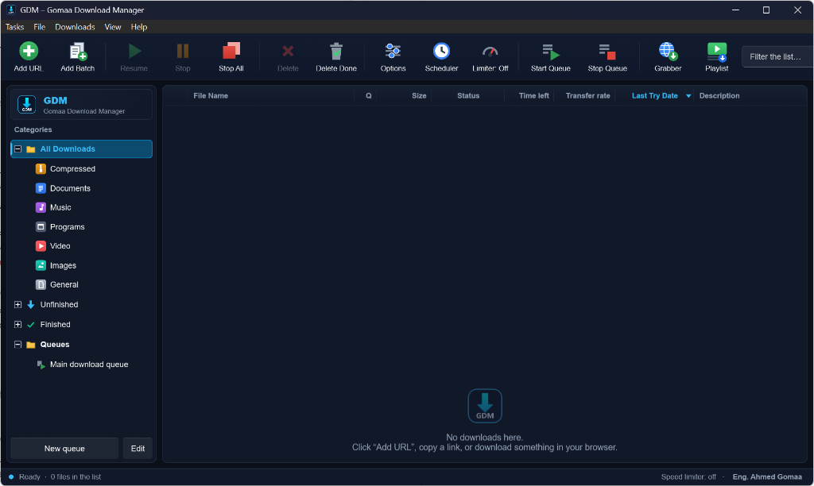
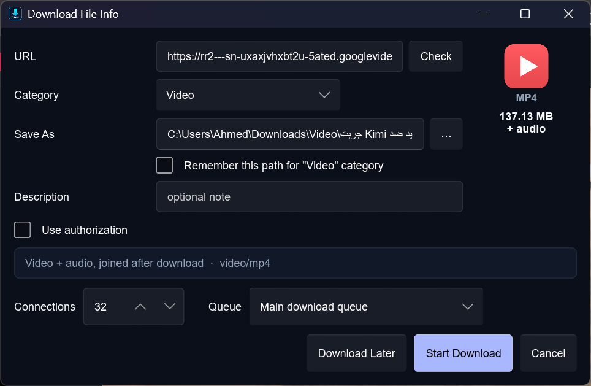
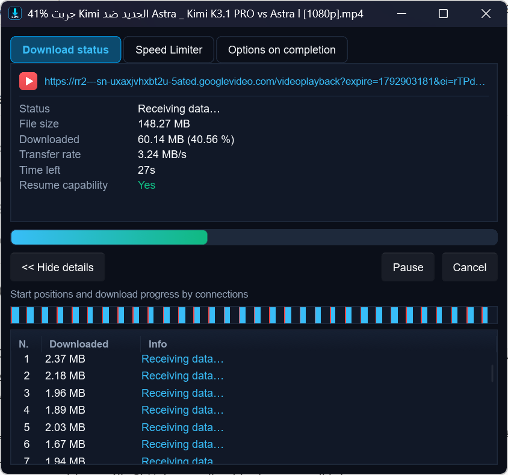

حتى 32 اتصالاً لكل ملف
تقسيم ديناميكي للأجزاء يعيد توزيع العمل تلقائياً على الاتصالات لأقصى استفادة من سرعة الإنترنت.
GDM يقسّم كل ملف إلى ما يصل إلى 32 اتصالاً متوازياً، ويستأنف التنزيل بعد أي انقطاع، ويلتقط الروابط والفيديوهات مباشرةً من متصفحك — مجاناً وبدون إعلانات.

أدوات احترافية للسرعة والتنظيم والتحكم، بواجهة بسيطة وخفيفة على جهازك.
تقسيم ديناميكي للأجزاء يعيد توزيع العمل تلقائياً على الاتصالات لأقصى استفادة من سرعة الإنترنت.
أوقف أي تنزيل واستأنفه لاحقاً، حتى بعد إعادة تشغيل الجهاز أو انقطاع الاتصال.
التقاط التنزيلات تلقائياً من Chrome وEdge وBrave وOpera وVivaldi وFirefox مع مراقبة حيّة.
تنزيل الفيديوهات وقوائم التشغيل بالجودة التي تختارها بفضل yt-dlp وFFmpeg.
احفظ الصوت مباشرةً بصيغة MP3 دون الحاجة لتنزيل الفيديو كاملاً أو تحويله يدوياً.
وضع التنزيل المتسلسل للأجزاء يتيح لك بدء مشاهدة الفيديو قبل اكتمال تنزيله.
فيديو، موسيقى، مستندات، برامج وملفات مضغوطة — كلٌّ في مجلده المناسب تلقائياً.
نظّم التنزيلات في طوابير، وحدد مواعيد بدئها، واجعل الجهاز يُطفأ تلقائياً عند الانتهاء.
حدد سقفاً لسرعة التنزيل لتبقى قادراً على التصفح ومكالمات الفيديو بسلاسة.
أضف عشرات الروابط دفعةً واحدة، أو اجمع الملفات من صفحات موقع كامل بخطوات بسيطة.
بيانات الدخول للمواقع المحمية تُحفظ مشفّرة على جهازك فقط.
التحديثات تُنزَّل ويُتحقق من سلامتها ببصمة SHA-256 قبل تثبيتها.
لقطات حقيقية من البرنامج.


إضافة GDM تلتقط الملفات والفيديوهات تلقائياً وتسلّمها للبرنامج، ويمكنك متابعة تقدم التنزيلات مباشرةً من نافذة الإضافة.
ثلاث خطوات بسيطة وتكون جاهزاً للتنزيل.
نزّل ملف GDM-Setup.exe من زر التنزيل في هذه الصفحة.
اتبع خطوات التثبيت البسيطة — لا يحتاج صلاحيات المسؤول.
من داخل GDM افتح «تكامل المتصفح» وأضف الإضافة لمتصفحك، ثم ابدأ التنزيل.
نعم. GDM مجاني بالكامل، بدون إعلانات، وبدون اشتراكات أو ميزات مدفوعة.
البرنامج آمن ولا يحتوي على أي برمجيات إعلانية. قد يعرض Windows SmartScreen تحذيراً لأن البرنامج جديد وغير منتشر بعد؛ اضغط «مزيد من المعلومات» ثم «تشغيل على أي حال» للمتابعة. احرص دائماً على تنزيله من هذه الصفحة الرسمية فقط.
نعم. يتحقق GDM من وجود إصدارات جديدة، ويتحقق من سلامة ملف التحديث ببصمة SHA-256 قبل تثبيته.
Google Chrome وMicrosoft Edge وBrave وOpera وVivaldi وMozilla Firefox. يمكنك إضافة الإضافة من داخل البرنامج عبر «تكامل المتصفح».
Windows 10 أو Windows 11 بنظام 64-bit. لا يحتاج التثبيت صلاحيات المسؤول، وتتوفر الواجهة بثماني لغات.
نزّل GDM الآن مجاناً وجرّب الفرق بنفسك.
تنزيل GDM لويندوزv1.0.4 · Windows 10/11 (64-bit) · مجاني · بدون إعلانات